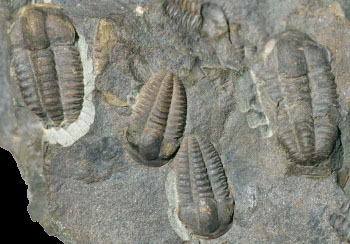
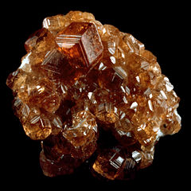

animals that lived over 400 million years ago, when the area that is now Lake Champlain Basin was part of a shallow tropical sea. The fossils were formed when shells, other hard parts of plants and animals or traces of the organisms, such as worm borings or animal tracks, were buried in limey mud. Over time, this mud cemented into limestone and shale.|for more|
A mineral is a naturally occurring substance that is solid and stable at room temperature, representable by a chemical formula, usually abiogenic, and has an ordered atomic structure. It is different from a rock, which can be an aggregate of minerals or non-minerals and does not have a specific chemical composition. |for more|
In geology, a rock is a naturally occurring solid aggregate of one or more minerals or mineraloids. For example, the common rock granite is a combination of the quartz, feldspar and biotite minerals. The Earth's outer solid layer, the lithosphere, is made of rock.|for more|